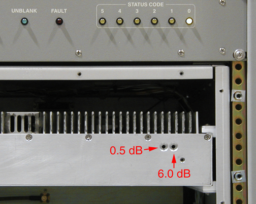

- 00000018WIA30102E20GYZ
- id_131072833.0
- Aug 29, 2019 1:40:27 AM
4KW and 8KW MNS Amplifier Calibration
Prerequisites
| Required persons | Preliminary requirements | Procedure | Finalization |
|---|---|---|---|
| 1 | Not Applicable | 2 hours | Not Applicable |
| Item | Quantity | Effectivity | Part number | Manufacturer |
|---|---|---|---|---|
| Small Philips head screwdriver (size #0 or #00) with at least 2 inch length | 1 | - | - | - |
| ||||||||||||||||
About this task
Special tools consideration depending on the calibration type undertaken:
| Item | Quantity | Part Number |
| Calibrating Using Oscilloscope Method : | ||
| Oscilloscope with 50 Ohm Impedance and >150MHz of Bandwidth | 1 | - |
| RG214 Cable | 1 | - |
| BNC Cable | 1 | - |
| 30dB High Power Attenuator (OR 40dB Power Coupler) (See Note) | 1 | - |
| 40dB attenuator (OR 30dB attenuator plus 50 Ohm Dummy Load) (See Note) | 1 | - |
| Calibrating Using Power Meter Method: | ||
| RF Power Measurement Kit | 1 | 2372868 |
| 50 Ohm Dummy Load | 1 | - |
| Note: If you use the 40dB Power Coupler, you must use the 30dB attenuator plus 50 Ohm Dummy Load. | ||
Procedure
- Calibrate the amplifier:
- For CPC 4kW calibration:
-
The manual prescan should already be running. Measure the peak envelope power using the oscilloscope (power attenuator method or coupler method) or power meter method.
-
For ease of calculation an Excel tool is available. Enter the measurement data into the appropriate calculator.
-
If the gain adjustment is positive, turn the amplifier gain potentiometer adjustment clockwise. The amplifier gain potentiometer is located at the back of the CPC amplifier.
-
You may adjust the gain of the CPC amplifier while the scan continues to run.
-
Increase the TG to 200. When 4kW is measured at TG=200, you have successfully calibrated the amplifier. If the amp trips before achieving 4kW:
Note: To know what peak-to-peak value you should be looking for, refer to Figure 5.-
Back off the gain pot about 1/8 turn.
-
Allow the amplifier time to recover.
-
Restart manual prescan.
-
Select Scan TR.
-
Repeat this until you have set the amp operating at its peak output at a TG of 200.
Note: It is normal for the CPC display on the front of the amp to be fluctuating between +/-10% of actual power due to slight differences in oscilloscopes, attenuators, and amplifiers. -
-
Reset TPS.
-
- For AMT 8kW calibration:
-
Remove the front cover of the AMT amplifier (this will take about 8 minutes as there are 50+ screws to remove). When the covers are removed, you will see two holes for gross (6.0dB) and fine (0.5 dB) adjustments as pictured in Figure 3 and Figure 4.
Note: It is possible that these two holes will be covered with an external screw. If this is the case, remove the screw so that the amplifier looks like the one in Figure 3.Figure 3. AMT Amplifier with Covers Removed; Indicators Point to Adjustment Points 
Figure 4. AMT Amplifier Detail of dB Adjustment 
-
The manual prescan should already be running. Measure the peak envelope power using the oscilloscope (power attenuator method or coupler method) or power meter method.
-
Enter the measurement data into the appropriate calculator.
-
STOP or PAUSE the manual prescan before adjusting the gain controls on the AMT amplifier.
-
If the calculator specifies an adjustment for the 6.0 dB control, insert a long Philips screwdriver, size #0 or #00, in the 6.0 dB adjuster and turn the control clockwise the specified number of clicks.
-
Restart the manual prescan and measure the power. Use the calculator provided to recalculate the remaining gain adjustment.
-
STOP or PAUSE the manual prescan before adjusting the gain controls on the AMT amplifier.
-
Insert a Philips screwdriver in the 0.5 dB adjustment control and turn the specified number of turns. *** IF the gain of the system jumps by about 8 dB when adjusting the 0.5 dB control that indicates that it has been rotated past its zero point as per Figure 4. This is easy to fix:
-
If you were DECREASING gain (clockwise turns), turn 4 more clockwise clicks on the 0.5 dB control and 1 clockwise click on the 6.0 dB control.
-
If you were INCREASING gain (counterclockwise turns), turn 4 more clicks counterclockwise on the 0.5 dB control and 1 counterclockwise click on the 6.0 dB control
-
-
Repeat steps 7.b.vi, 7.b.vii, and 7.b.viii as necessary to achieve the correct gain.
-
After the calculated gain adjustment is almost zero, set the TG to 200 and verify full power output without peak power faults. ***You may need to add one additional clockwise click of the 0.5 dB control if the system is sensitive to faults at the 8 kW peak power level.
-
When 8 kW is measured on the oscilloscope at TG=200, you have correctly calibrated the amplifier.
Note: To know what peak-to-peak value you should be looking for, refer to Figure 5. -
Put the front cover back on the AMT amplifier.
Reset the TPS.
Figure 5. dB Lookup Table 
-
- For CPC 4kW calibration: